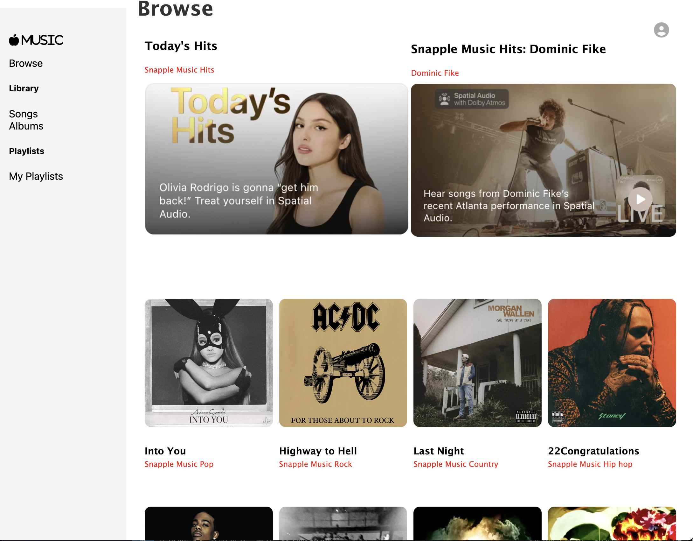

Snapple Music
Welcome to Snapple Music! Check out our live version here: https://snapple-music.onrender.com/
Snapple Music is based off Apple Music, which according to Google, is a music, audio and video streaming
service developed by Apple Inc. Users select music to stream to their device on-demand, or they can listen to
existing playlists.
Snapple Music allows users to upload and update their own songs, create albums and playlists, and customize
their albums and playlists by adding or deleting songs from them.
The backend of Snapple Music is built using Python and Flask with a PostgreSQL database. The frontend is
handled with React and Redux. Snapple Music also utilizes AWS in order to access a cloud database.
